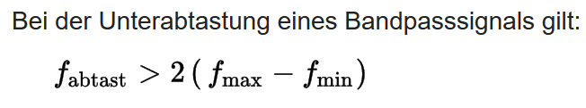

Erklärung der Angaben im Header, hier Musik Datei
Channels: 2 - Anzahl der Kanäle: 1 = mono, 2 = stereo
Frames: 223921 - Anzahl der Frames in der Datei
Sample Rate: 44100 - Samples pro Sekunde je Kanal, Abtastrate in Hz
Valid Bits: 16 - Anzahl der gültigen Bits
Bytes per sample : 2
Wie hoch ist die Bitrate für die beiden Dateien?
Datei Musik
223921 x 16 = 352800 Bit/s
Datei Sprache
130015 x 16 = 2080240 Bit/s
Anhand von sine_hi06.wav Werten ändert sich die Frequenz der Sinus-Schwingungen um etwa 2.1. Unsere Einschätzung liefert deshalb f0 = 16000 / 2.1 = 7619
Werte sine_hi06.wav: 16305, -15679, 14449, -12665, 10394, -7723, 4756, -1606, -1606, 4756, -7723, 10394, -12665, 14449, -15679, 16305, -16305, 15679, -14449, 12665, -10394, 7723, -4756, 1606, 1606...
Anhand von sine_lo06.wav Werten ändert sich die Frequenz der Sinus-Schwingungen um 8, mit "klaren" maxima und minima an denen zwei aufeinanderfolgende Abtastpunkte gleiche Werte haben. Unsere Einschätzung liefert deshalb f0 = 16000 / 8 = 2000
Werte sine_lo06.wav: 1606, 4756, 7723, 10394, 12665, 14449, 15679, 16305, 16305, 15679, 14449, 12665, 10394, 7723, 4756, 1606, -1606, -4756, -7723, -10394, -12665, -14449, -15679, -16305, -16305...

Abtasttheorem besagt, dass bei der Analog/Digital-Wandlung die Abtastfrequenz mehr als doppelt so hoch sein muss wie die höchste Frequenz des zu digitalisierenden analogen Signals. Die Abtastfrequenz eines Audiosignals muss demnach größer als 40 kHz, die Abtastfrequenz eines Videosignals in SD größer als 10 MHz und in HD größer als 60 MHz sein.

Wie lautet es und wie läßt sich der Grenzfall, für den es gerade noch gilt, illustrieren (Zeichnung !)?
Die Abtastefrequenz der herkömmlichen Soundkarten ist immer größer als die höchste Frequenz des zu digitalisierenden analogen Signals, somit wird das Abtastheorem erfüllt und muss kein Aliasing auftreten.
Modifiziere wave_io dahingehend, dass vom eingelesenen Signal jeder zweite Abtastwert verworfen wird und das resultierende Signal abgespeichert wird. Der Header muß natürlich entsprechend verändert werden! Wende das resultierende Programm zunächst auf 'sine_lo.wav' und 'sine_hi.wav' an. Welche Frequenzen erscheinen nach dem Down- Sampling (Spektrogramm und WAVs ins Protokoll !)? Was würde passieren, wenn man geeignet bandbegrenzen würde?
Nach dem Downsampling von sine_hi06.wav werden die Frequenzen in tiefere Frequenzbereiche verschoben. Laut dem Spektogram hat sich die Frequenz von 7986 Hz auf 500 Hz verringert. Somit entsteht ein Aliasing-Effekt.
Werte sine_hi06.wav: 16305, -15679, 14449, -12665, 10394, -7723, 4756, -1606, -1606, 4756, -7723, 10394, -12665, 14449, -15679, 16305, -16305, 15679, -14449, 12665, -10394, 7723, -4756, 1606, 1606, -4756, 7723, -10394, 12665, -14449...
sine_hi.wav

Laut dem Spektogram nach dem Downsampling von sine_lo06.wav haben die Frequenzen den selben Wert.
Werte sine_lo06.wav: 1606, 4756, 7723, 10394, 12665, 14449, 15679, 16305, 16305, 15679, 14449, 12665, 10394, 7723, 4756, 1606, -1606, -4756, -7723, -10394, -12665, -14449, -15679, -16305, -16305, -15679, -14449, -12665, -10394, -7723, -4756, -1606, 1606, 4756, 7723, 10394, 12665, 14449, 15679, 16305, 16305, 15679, 14449, 12665, 10394, 7723, 4756. 1606
sine_lo.wav

Bei der 16-bit Auflösung können die Amplitudenwerten 216 sein. Bei der 8-bit Auflösung können die Amplitudenwerten 28 sein.
Wir wollen nun wave_io so modifizieren, dass wir die Bitzahl reduzieren können. Dazu können wir z.B. alle Samples
durch eine Potenz von 2 teilen (Integer-Division ohne Rest). Damit das resultierende Signal nicht leiser wird als das
Original, kompensieren wir die Operation durch Multiplikation mit derselben Zweierpotenz. Zu beachten: Der Datentyp hat
nach wie vor 16 bit!
(Denselben Effekt erreicht man auch durch einfaches logisches 'Verunden' mit einem entsprechenden HEX-Wert, indem
man mit dem LSB beginnend Bits 'ausblendet'.)